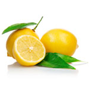
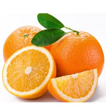
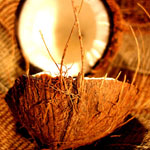
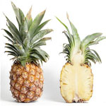
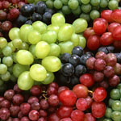
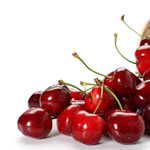
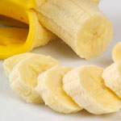
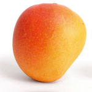
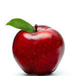

Fruit Secret, est une application jquery mobile, qui a vu le jour dans le cadre d'une compétition organisée par mobile4senegal. Cette app à été développé par trois (2) étudiants haïtiens et un étudiant sénégalais de l'Université Assane Seck de Ziguinchor, Sénégal. C'est une application qui vous permet de mieux se familiariser avec les fruits dont vous côtoyez dans vos quotidiens.
Auteurs :
• Menendez NELSON
• Gérald ADONIS
• Charles Marco Pereira
Version de l'app : 1 . 0 . 1
Date de publication : Janvier 2014
Contact : menendezon@gmail.com

Le citron est un agrume, fruit du citronnier. Le citronnier (Citrus limon) est un arbuste de 5 à 10 m de haut, à feuilles persistantes.
Le fruit mûr a une écorce qui va du vert tendre au jaune éclatant sous l'action du froid. La maturité est en fin d'automne et début d'hiver dans l'hémisphère nord. Sa chair est juteuse, acide et riche en vitamine C, ce qui lui vaut - avec sa conservation facile - d'avoir été diffusé sur toute la planète par les navigateurs qui l'utilisent pour prévenir le scorbut. De l'écorce on extrait une huile essentielle qui contient entre autres substances du limonène et du citral.
Les couleurs, arômes, saveurs, degré d'acidité ou sucre, la richesse en huile essentielle varient selon les variétés, les terroirs, les climats, la maturité, l'âge du citronnier et le type de porte-greffe, formant une palette de goûts insoupçonnée.
La diversité des citrons n'est pas reflétée par le catalogue des variétés inscrites. Il existe, du climat méditerranéen aux tropiques, de nombreux cultivars locaux résultant de la reproduction par semis. Ce sont notamment des citrons géants qui ne sont pas commercialisés car pauvres en jus.
Il a de multiples usages en cuisine :
- le jus frais est utilisé en assaisonnements sur le poisson,
- le jus avec de la glace est consommé,
- il remplace le vinaigre dans les salades,
- il est souvent utilisé sous forme confite dans les tajines marocains,
- additionné d'eau et de sucre, il compose la citronnade, boisson rafraîchissante,
- il est également un ingrédient essentiel de la limonade et du limoncello,
- il est employé en pâtisserie, notamment dans la recette de la tarte au citron.
Le citron peut aussi servir comme détartrant dans un lave-vaisselle, parfumant aussi ce dernier.
Le jus de citron :
- peut s'avérer utile pour le nettoyage d'objets en aluminium, et entre dans la composition de la mixture pour nettoyer les ustensiles en cuivre,
- peut servir comme encre invisible : il suffit alors de faire chauffer la feuille au-dessus d'une chandelle pour voir apparaître les écritures,
- a comme effet de blanchir naturellement les dents,
- mélangé à de l'eau en fait une boisson coupant la soif et également rafraîchissant
Il est conseillé de boire une tasse de jus de citron le matin, ça permet de nettoyer le sang et de combattre contre les bactéries.
Une fois épluchés, les fruits et les légumes noircissent au contact de l'air par oxydation.
Pour sauvegarder les vitamines, il suffit de frotter la chair des fruits (pomme, poire, avocats) avec une moitié de citron. Pour les crudités râpées comme le céleri rave, il faut l'arroser de jus de citron.
L'ajout de quelques gouttes de citron ou de vinaigre rend la pâte brisée plus tendre et moins élastique, car l'acide désagrège le gluten (protéine de la farine).
Réputé pour avoir des propriétés antiseptiques, il est utilisé dans de nombreux traitements contre le mal de gorge et permet également de faire des cures pour les mains. Il est de plus utilisé en cosmétologie pour éclaircir et unifier le teint.
Son jus est efficace contre les mucosités : du jus de citron dilué dans de l'eau chaude évite d'avoir la voix enrouée.
Son taux élevé en vitamine C et ses propriétés antiseptiques font du citron un fruit bien utile pendant l'hiver pour faire face aux infections.
Le citron contient de puissants flavonoïdes naturels (antioxydants) qui pourraient jouer un rôle contre les maladies dégénératives du cerveau, comme la maladie d'Alzheimer.
C'est aussi un fruit diurétique.
À température ambiante, il se conserve une dizaine de jours, mais une fois coupé (ou cuit), il perd ses vitamines, il faut donc le consommer rapidement.
Le citron est aussi photosensibilisant. Lors de l'application du jus de citron sur la peau, des taches peuvent apparaître suite à une exposition au soleil. Il existe deux réactions : la phototoxicité et la photoallergie.
Le citron peut aussi causer des brûlures au niveau des muqueuses si son jus ou bien son huile essentielle est absorbé en trop grandes quantités. Les muqueuses brûlées peuvent être des muqueuses de l'œsophage, de l'estomac ou autres.
Le jus de citron peut, consommé régulièrement, déminéraliser l'émail des dents.
Crédit : http://fr.wikipedia.org/wiki/Citron

L'orange est un agrume, fruit des orangers, des arbres de différentes espèces de la famille des Rutacées ou d'hybrides de ceux-ci. Il en existe donc plusieurs types, principalement issus de l'espèce citrus sinensis comme les oranges sanguines, et les oranges amères produites par le bigaradier.
Comestible, elle est très riche en vitamine C. C'est le quatrième fruit le plus cultivé au monde.
L'orange serait la pomme d'or du jardin des Hespérides.
L'orange est, comme son nom l'indique, de couleur orange. Elle possède une peau épaisse et assez rugueuse. Elle se découpe en quartiers comme sa cousine la mandarine. L'orange est un fruit juteux, sucré, excitant.
Le fruit est consommé frais, mais il est aussi utilisé dans d'innombrables recettes comme le jus d'orange (54 % du marché des jus de fruits), les confitures, les pâtisseries, certains alcools, ou le canard à l'orange …
Les zestes, confitures ou marmelades faits avec des écorces d'oranges non issues de l'agriculture biologique (ou non traitées) peuvent contenir des quantités significatives de résidus de pesticides. Il faut donc être prudent. Les écorces attaquées par des champignons ou moisissures (moisissure bleue notamment) peuvent également contenir des mycotoxines.
Pour une valeur nutritive de 100g d'orange crue, on peut se procurer de :
Vitamine C : 53.2mg
Vitamine B5 : 250 µg
Vitamine A : 225UI
Vitamine B1 : 87 µg
Vitamine B6 : 60 µg
Rétinol : 0 µg
Vitamine B2 :40 µg
Vitamine B9 : 0 µg
Vitamine E : 0,18 µg
Vitamine B3 : 282 µg
Vitamine B12 : 0 µg
Vitamine K : 0 µg
Les peaux d'oranges, mais aussi de citrons ou de pamplemousses, libèrent communément par pression ou par grattage des molécules de furocoumarines. Un contact prolongé ou un frottement avec la peau couplé à une exposition au soleil peut provoquer des rougeurs irritantes et des démangeaisons désagréables.
Crédit : http://fr.wikipedia.org/wiki/Orange

La noix de coco est le fruit du cocotier (cocos nucifera), un des représentants de la famille des palmiers ou arécacées. La fleur complète fait jusqu'à 30 centimètres de diamètre. L'extérieur du fruit est lisse et de couleur vert clair ou orange lorsque la fleur n'est pas mûre, tirant sur le brun et recouvert d'une épaisse couche de fibres ligneuses brunes entourant la noix à maturité et composé d'une solide coque sphérique qui protège une amande blanchâtre comestible.
Inséré sous l'un des trois pores germinatifs, se trouve un embryon d'environ 5 mm de long. Un liquide opalescent et sucré occupe jusqu'aux trois quarts de la cavité interne. On l'appelle communément « eau de coco », le terme « lait de coco » étant de préférence réservé à un liquide blanchâtre extrait de l'amande râpée et pressée.
La noix de coco peut être consommée verte ou mûre. Lorsque le fruit est vert, l'eau qu'il contient est consommée comme boisson rafraîchissante.
Mûre, l'amande de noix de coco est comestible et sert d'ingrédient à de nombreuses recettes de cuisine tropicale en raison de son parfum caractéristique. Le germe de la noix de coco qui se développe en occupant l'espace laissé par l'eau de coco est également comestible. En petits morceaux, la pulpe de noix de coco peut accompagner une fondue au chocolat, râpée elle s'utilise dans les sauces au curry pour accompagner les poissons, l'agneau ou le poulet.
Blanche ou grillée, elle s'utilise aussi fréquemment dans les desserts comme les biscuits congolais, les tuiles, les glaces, les cakes et quatre-quarts, et pour la décoration des gâteaux.
L'huile de coco peut être consommée directement. Utilisée en petite quantité sur les cheveux, elle a un pouvoir revitalisant et brillant. En Inde, elle est utilisée en massages du cuir chevelu afin d'épaissir et de protéger les cheveux.
Le lait de coco est très utilisé dans la cuisine haïtienne du sud de l'île. On l'utilise principalement pour préparer le riz (ou le blé, le petit mil ou la semoule de maïs) aux petits pois (ou aux haricots). On l'utilise également pour préparer le pot-au-feu (ou bouillon), pour faire de la bouillie aux céréales, dans les jus de cuisson de la viande. Certains l'utilisent même dans la préparation du jus au lait.
Une fois bien séchée, la pulpe se conserve dans un bocal hermétique à l'abri de la chaleur et de la lumière.
Une noix de coco entière se conserve plusieurs semaines dans un endroit frais. L'amande se conserve quelques jours au frais, enveloppée dans un film alimentaire.
En Haïti, on conseille un mélange de jus de carotte, de jus de betterave rouge et du lait de coco contre l'anémie.
La noix de coco est riche en potassium, fer, magnésium, phosphore, cuivre et zinc. L'huile de coco est riche en acides gras. L'eau de jeunes noix de coco fut utilisée, dans des conditions d'isolement ne permettant pas l'accès à des soins médicaux suffisants, comme solution sucrée en injection intraveineuse. C'est un liquide stérile, proche du profil d'électrolyte du plasma sanguin, et des solutions d'électrolytes produites par les laboratoires pharmaceutique.
Contrairement à une idée reçue, les chutes de noix de coco ne sont pas responsables de 150 morts par an dans le monde. Cette statistique avait été inventée par une compagnie d'assurance à partir de bribes d'une étude médicale, puis reprise par les défenseurs des requins pour montrer que les noix de coco étaient plus dangereuses que les squales. Les chutes de noix de coco ont néanmoins engendré de graves blessures à la tête (coma, fracture du crâne).
Les caractéristiques de rigidité et de solidité de la noix de coco sont les plus proches de celles du crâne humain que l'on puisse trouver à l'état naturel chez un végétal.
 L'ananas (ananas comosus) est une plante xerophyte, originaire d'Amérique du Sud (nord du Brésil), d'Amérique centrale, et des Caraïbes. Il est connu principalement pour son fruit comestible, qui est en réalité une infrutescence. Le fruit est allongé et peut avoir plus d'une trentaine de centimètres de longueur; son écorce, composée de motifs hexagonaux en écailles, est de couleur variable selon la variété. Sa chair, très juteuse, est également de couleur variable, généralement blanche ou jaune. Le mot ananas vient du tupi-guarani naná, qui signifie « parfum des parfums ». Le poids du fruit est proportionnel au poids du pied au moment de la floraison : l'art du planteur consiste donc à le faire « fleurir » au bon moment.
Le jus d'ananas, du fait de ses vertus protéolytiques (endopeptidase, hydrolase, cystéine), peut être utilisé pour attendrir la viande. Les propriétés physicochimiques de ce fruit s'apparentent fortement à celles des agrumes, et les cuisiniers l'utilisent de la même façon, en accompagnement de viandes, de poisson ou en dessert.
Au Congo, on en fait une bière locale.
L'ananas peut être consommé cru ou accompagné d'autre fruit sous forme de plat de fruits
Au Burundi, on fait aussi de la liqueur d'Ananas, appelée Bourasine.
Pour la même raison, son jus est à déconseiller dans les desserts comportant de la gélatine.
L'ananas est très riche lorsqu'il est consommé frais .
La tige de l'ananas possède une enzyme, la broméline, qui fait partie de la famille des protéases : elle a des effets cicatrisants, anti-inflammatoires et facilite la résorption des œdèmes. Elle est de plus utilisée pour faciliter la digestion.
La broméline est aussi efficace contre la tendinite. Grâce à son pouvoir désinfiltrant, il est conseillé dans les régimes associés à la rétention d'eau. La broméline peut aussi servir pour attendrir la viande.
Des vertus cosmétiques lui sont aussi attribuées, notamment pour faire diminuer l'acné : se frotter un morceau d'ananas sur la peau neutraliserait les acides graisseux, mais enlèverait aussi la pellicule graisseuse faisant partie l'épiderme.
L'ananas est une plante tropicale qui meurt si elle est exposée à une température inférieure à 10 °C : c'est pour cette raison qu'on ne doit pas conserver le fruit au réfrigérateur. Elle requiert un sol bien drainé, riche et acide. Un pH de l'ordre de 4,5 à 5,5 est important pour une bonne croissance : les maladies originaires du sol sont ainsi réduites. L'ananas n'apprécie pas du tout l'eau stagnante, d'où l'importance du drainage.
Crédit : http://fr.wikipedia.org/wiki/Ananas
 Le raisin est le fruit de la Vigne (Vitis). Le raisin de la vigne cultivée Vitis vinifera est un des fruits les plus cultivés au monde, avec 68 millions de tonnes produites en 2010, derrière les agrumes (124 millions), les bananes (102 millions) et les pommes (70 millions). Il se présente sous la forme de grappes composées de nombreux grains, qui sont sur le plan botanique des baies, de petite taille et de couleur claire, pour le raisin blanc (verdâtre, jaunâtre, jaune doré) ou plus foncée, pour le raisin rouge (mauve, rose ou noir-violet).
L'utilisation du raisin est très varié, il est utilisé pour produire du vinaigre du vin, le pekmez (un sirop épais turque), faire du jus, consommer cru avec d'autre fruits ou sans, etc.
Sa forte teneur en sucre peut entraîner une cristallisation du sucre avec le temps. Pour décristalliser un raisin, il suffit de le plonger dans un liquide (de l'alcool, du jus de fruit ou de l'eau bouillante), le temps que le sucre se dissolve.
Riche en vitamines A, B et C, le raisin contient de nombreux oligo-éléments dans un équilibre parfaitement assimilable par l'organisme. Chaque grain de raisin est recouvert de pruine riche en levures.
C'est un fruit assez énergétique avec 278 kJ (=65,6 kcal) pour 100 g.
Le raisin est très pauvre en graisses saturées, cholestérol et sodium. C'est une très bonne source de vitamine C et vitamine K.
L'exposition aux pesticides peut affecter la santé.
Crédit : http://fr.wikipedia.org/wiki/Raisin
 La cerise est le fruit comestible du cerisier. C'est, après la fraise, le plus populaire des petits fruits rouges. Il s'agit d'une drupe (petit fruit charnu à noyau), de forme sphérique, de couleur généralement rouge plus ou moins foncé, plus rarement jaune. Mûrs, ils ont une chair sucrée mais qui peut être amère, sans être acide. Avant d'être cultivées, ces merises sauvages étaient récoltées comme l'attestent les noyaux trouvés sur des sites néolithiques et de l'Âge du Bronze, en Europe centrale.
Les cerises se consomment nature, au sirop (amarena), en confiture, en pâtisserie (tarte, clafoutis, mendiant, etc.), boisson, par distillation ou macération, pour la préparation du kirsch (Alsace), du guignolet (Anjou), du marasquin (ou maraschino en italien (Dalmatie), de la Kriek (Belgique) et de la Ginjinha au (Portugal) et même en tisane.
Il est conseillé de garder la cerise au frais afin de conserver sa saveur.
Il est conseillé d'enlever les noyaux si on donne des cerises aux enfants.
La cerise douce est riche en sucre et assez énergétique. C'est une bonne source de fibres alimentaires et de vitamine C.
Les cerises fraîches détiennent le record en β-carotène, et sont très riches en vitamine A, vitamine E, et sont légèrement laxatives. Elles contiennent des sucres (15 g pour 100 g, dont le lévulose), de la pectine (utile pour les confitures), de la vitamine C.
Le potassium qu'elle contient lui donne des propriétés diurétiques et ses fibres stimulent le fonctionnement intestinal.
Leur teneur calorique reste raisonnable de 65 à 68 kcal pour 100 g.
Les pédoncules, ou queues de cerises, se préparent en décoction — peu agréable à boire — et sont utilisées notamment contre l'inflammation des voies urinaires, la cystite, la goutte et l'hydropisie.
Crédit : http://fr.wikipedia.org/wiki/Cerise

La banane est le fruit ou la baie dérivant de l'inflorescence du bananier. Les bananes sont des fruits très généralement stériles issus de variétés domestiquées. Les fruits des bananiers sauvages et de quelques cultivars domestiques contiennent des graines. Les bananes sont généralement jaunes lorsqu'elles sont mûres et vertes quand elles ne le sont pas.
La banane est un long fruit légèrement incurvé, souvent regroupé sur le bananier en grappes nommées « régimes ». La banane possède une peau de couleur jaune ou verte facile à détacher. La partie intérieure est une pulpe amylacée au goût sucré et à la consistance généralement fondante.
La banane peut être consommée différente façon selon les variétés.
- Banane dessert : La peau des fruits est généralement jaune ou rose et la chair est composée d'amidon hydrolysé et de sucres non cristallisables. Utiliser comme complément dans les jus de fruits, plat de fruits, ou consommer au petit-déjeuner.
- Banane à cuire : Dans ce groupe, les principales sont les Banane plantain. Bien que tout aussi savoureuses crues que les premières, leur chair est plus ferme et il est plutôt d'usage de les consommer après cuisson car elles restent entières.
- Banane à bière : Elles se caractérisent par une pulpe amère. Elles sont fermentées, produisant ainsi un « vin de banane », particulièrement apprécié dans la région des Grands Lacs en Afrique.
La banane est un fruit très énergétique et très riche en potassium, dont elle peut couvrir les besoins quotidiens. Nutritive, facile à digérer, elle est riche en hydrates de carbone, phosphore, calcium, fer, vitamines A, B et C. Les bananes mûres sont riches en potassium et en sucres. Elles sont très nourrissantes (90 kcal/100 g) et très digestes en raison de leur faible teneur en graisses.
Deux autres atouts majeurs font de la banane un élément alimentaire vital dans de nombreuses zones rurales pauvres : sa haute valeur nutritionnelle (riches en vitamines A, C et B6, par exemple), et sa production sans interruption pendant toute l'année.
Crédit : http://fr.wikipedia.org/wiki/Banane

La mangue est le fruit du manguier, grand arbre tropical de la famille des Anacardiaceae, originaire des forêts du Pakistan et de la Birmanie où il pousse encore à l'état sauvage.
Cet arbre, le Mangifera Indica, a un feuillage persistant, dense et vert foncé. La forme de son fruit est à la base du motif cachemire.
Son nom vient du malayalam manga, repris par le portugais manga.
La mangue est un fruit charnu, son poids varie de 300 g à 2 kg.
C'est une drupe, sa chair adhère à un noyau large, plat et glissant. Elle peut être ronde, ovale ou réniforme, et présente une écorce pouvant être de couleur jaune, verte ou rouge, qu'il est nécessaire d'enlever, car elle contient des substances irritantes et n'est donc pas comestible.
Sa chair est jaune foncé, onctueuse et sucrée, avec un goût de pêche et de fleur. Selon les variétés ou lorsque le fruit est trop mûr, la chair devient parfois filandreuse.
La mangue est utilisée dans des plats d'origine tropicale ou encore en jus de fruit pour des cocktails exotiques.
On peut la manger nature ou l'incorporer aux salades de fruits, aux céréales et aux sorbets. On peut la transformer en coulis ou faire de la confiture. Elle est habituellement utilisée, sous forme sèche et moulue, dans de nombreux plats de légumes de la cuisine du nord de l'Inde pour donner un peu d'aigreur où elle est appelée amchur (parfois écrit amchoor), am étant le mot hindi pour "mangue". Elle est délicieuse avec la volaille, le canard et le porc. Dans les Mascareignes, la mangue verte peut être utilisée pour un rougail épicé qui accompagnera les plats de viande.
Les chutneys à la mangue verte sont des condiments doux composés de mangue et d'épices variées. Ils accompagnent les plats au curry, la viande froide ou les fromages. Il existe plusieurs recettes de chutneys à la mangue, à la Jamaïque (recette), en Inde (recette).
La matière grasse issue du noyau de la mangue est incorporée à certains aliments tels le chocolat.
La mangue peut fournir la totalité de l'apport journalier recommandé en β-carotène, en fibres et en vitamine A et C, ce qui lui confère la palme de la protection contre l'action des radicaux libres.
Le noyau peut causer des crampes sévères.
Crédit : http://fr.wikipedia.org/wiki/Mangue

La pomme est le fruit du pommier. Elle est comestible et a un goût sucré ou acidulé selon les variétés. Elle fait partie des fruits les plus consommés dans le monde.
La pomme est un fruit charnu, de forme quasi sphérique, déprimée au sommet et à la base, à pulpe homogène. Certaines variétés anciennes avaient des formes particulières, comme la pomme d'api, plutôt plate et de forme étoilée pentagonale, ou les pigeonnets, au contraire très allongés. La lemon pippin anglaise, ancienne pomme à cuire, avait la forme et la couleur d'un citron.
Son poids est très variable selon les variétés et les conditions de végétation. Ses couleurs à maturité, se déclinent du vert « pomme » au rouge plus ou moins foncé en passant par une grande variété d'intermédiaires vert pâle, jaune, orangé ou de couleurs plus ou moins panachées.
La pomme peut se manger crue ou cuite, en dessert ou en accompagnement de mets salés, en compote, en tarte, en gâteau, en gelée, en confiture, en pâte de fruit, plat de fruits ; on peut en faire du jus ou des boissons fermentées. Selon le mode de consommation le plus adapté à la variété, on parle de « pomme de table » (ou « pomme à dessert » ou « pomme à couteau »), de « pomme à cuire » ou de « pomme à cidre ».
Il est conseiller de croquer la pomme sans la peler, en ayant simplement pris soin cependant de la laver.
Le stockage de longue durée entraîne une baisse du taux de vitamine d'environ 15 % et la cuisson provoque une destruction vitaminique partielle, de l'ordre de 25 à 30 % pour une cuisson de la pomme au four.
Le profil nutritionnel de la pomme en fait un fruit tout à fait adapté aux sportifs. Les composantes de la pomme agissent de façon bénéfique sur l'organisme et ce, avant, pendant et après l'effort.
C'est en vitamine C que la pomme est la mieux pourvue, dans la partie externe de la pulpe et plus encore dans la peau. Celle-ci renferme quatre à cinq fois plus de cette vitamine que le reste du fruit.
Les autres vitamines contenues dans la pomme, B1, B2, PP, B5, B6, B9, provitamine A (β-carotène, 0,07 mg aux 100 g) et vitamine E (0,5 mg aux 100 g), contribuent également à faire de ce fruit un véritable abécédaire de la forme.
La pomme peut être attaquée par diverses maladies des pommiers. Il peut s'agir de maladies bactériennes, virales, ou parasitaires.
Crédit : http://fr.wikipedia.org/wiki/Pomme